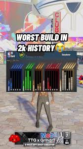

Home
How I Win in 2K
Welcome to 2k for dummys
Where you will learn how to not suck at the game we call 2k

This is what we call attributes,and depending on your attributes it you get a archetype for example "High flyer" "3pt Hunter" or "Midrange Deadeye"
. These are examples of specailized archetypes that excel in one or two things. This would be your build.

These are the attributes i use to win on a big man build.Notice the stats that this build prioritized
3pt
Strength
Dunk
Your top four ATTS will be your best strengths and wht you will rely on throught your games on 2k some people make bad builds and have to restart others research and determine their builds before the game comes out based of their position assigned to them by their "squad"

When you finish your build go out and have fun!!As you can see my build is very efficent and went a perfect 6/6 on the court and 3/3 from 3pt and i never play serious my only rule to you is NEVER TAKE THE GAME SERIOUS.